Componentes
Visão geral
Os 14 componentes do kit, agrupados pela função que têm num site de unidade curricular. Cada um tem uma página com demonstração, código, atributos, configuração que lê e acessibilidade.
Os componentes são elementos HTML próprios (<uc-…>) que se escrevem diretamente nas páginas. Trabalham no DOM da página, sem shadow DOM: o conteúdo escrito pelo professor continua a ser HTML normal, o CSS do theme.css aplica-se a tudo e, sem JavaScript, o texto continua legível. Os que mostram datas, prazos, avisos ou a equipa leem os dados do course.js, por isso esses valores escrevem-se uma vez e aparecem em todas as páginas.
Estrutura
A moldura de cada página e o título do curso.
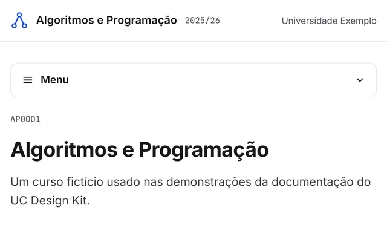
<uc-page>Cabeçalho, navegação entre páginas, rodapé e seletor de língua, tudo a partir do course.js.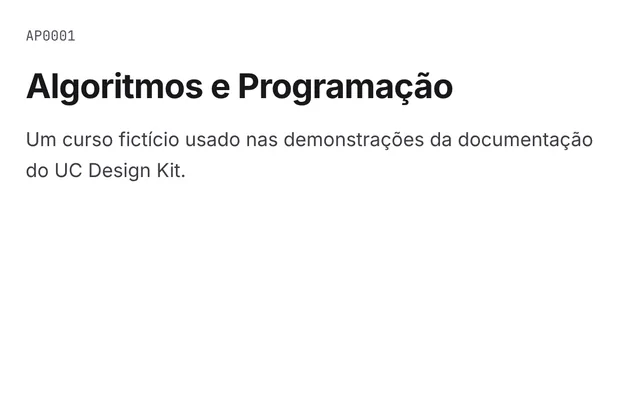
<uc-hero>Código, título e descrição do curso no topo da página inicial.
Datas e avisos
O que muda durante o semestre, escrito uma vez no course.js.
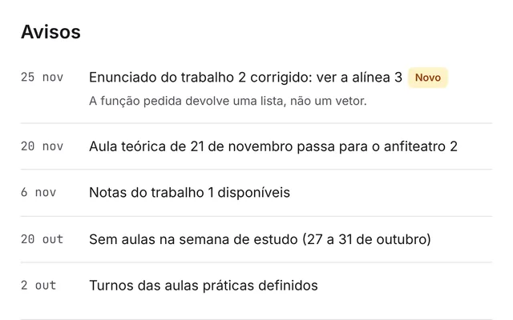
<uc-notices>Avisos do mais recente para o mais antigo, com a etiqueta Novo e os antigos recolhidos.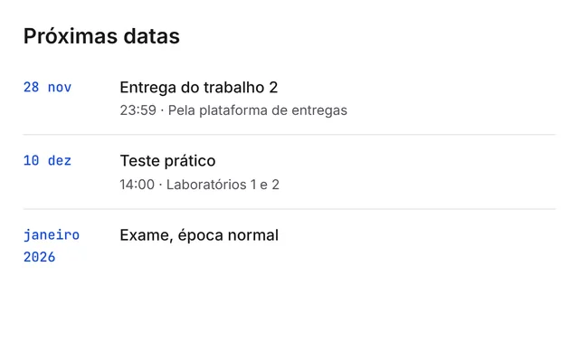
<uc-deadlines>Próximas datas em lista, ou todas numa tabela com o estado de cada uma.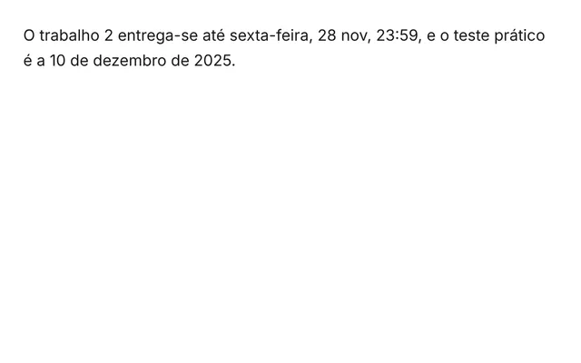
<uc-date>Uma data no meio do texto, formatada na língua ativa ou lida de um prazo.
Calendário
As semanas do semestre com datas calculadas.
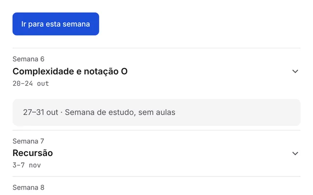
<uc-weeks>Contentor das semanas: interrupções, prazos no fim e Ir para esta semana.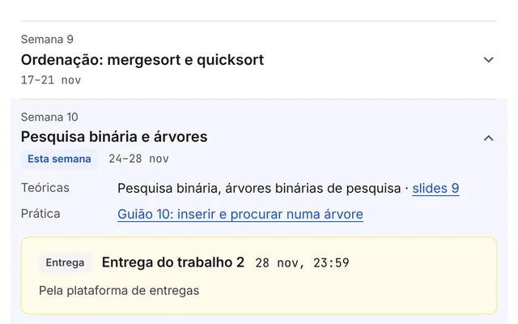
<uc-week>Uma semana que abre e fecha, destacada quando é a atual.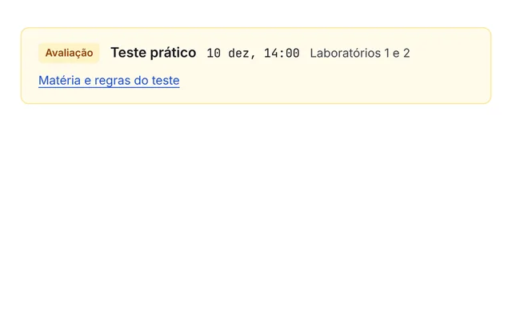
<uc-event>Uma avaliação ou prazo destacado dentro ou entre semanas.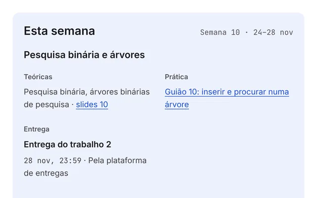
<uc-this-week>O cartão Esta semana da página inicial, com os prazos próximos.
Pessoas
Quem dá a cadeira.
Guiões e código
Aulas práticas com exercícios, código executável e perguntas.
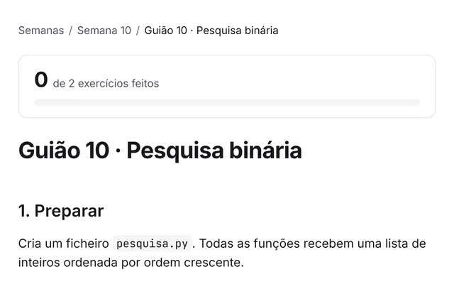
<uc-guide>Guião de aula prática com índice, ligação à semana e progresso dos exercícios.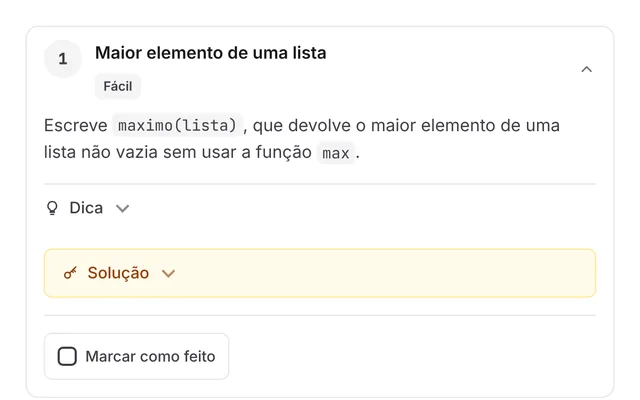
<uc-exercise>Exercício numerado com nível, dicas, solução e Marcar como feito.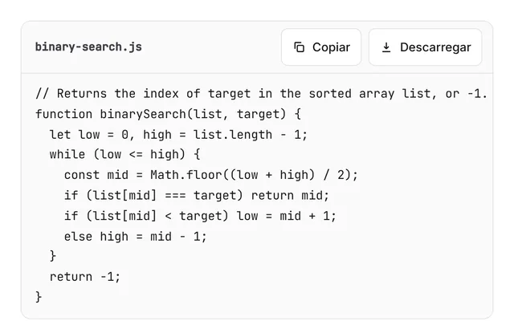
<uc-code>Código com realce, copiar e descarregar, edição e execução com testes.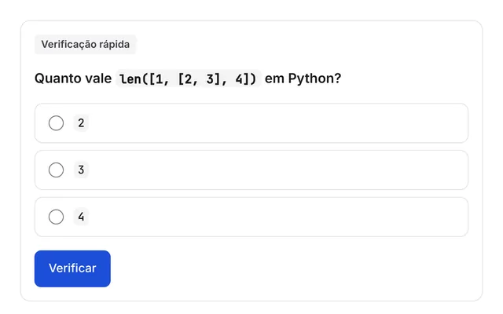
<uc-question>Pergunta de escolha múltipla com resposta imediata e explicação.
Regras comuns
- Atributos em minúsculas, separados por hífen. Os booleanos valem pela presença (
open,no-breaks). - O conteúdo escrito dentro de um componente nunca se perde: o componente envolve-o ou acrescenta-lhe coisas, e o que não reconhece mostra tal como está.
- Mudar de língua volta a desenhar todos os componentes; os textos gerados ("Esta semana", "Próximas datas") vêm dos dicionários do kit, e os do professor usam
lang(ver Línguas). - Hoje é a data real, ou
todaynocourse.js, ou?today=AAAA-MM-DDno endereço. As demonstrações desta documentação fixam 27 de novembro de 2025, na semana 10 de um curso fictício. - As classes CSS
uc-<componente>__…listadas em cada página são estáveis na versão 1 e podem ser usadas numtheme.css.